Μια στρατηγική που ακολουθεί τάσεις σε ένα διαφοροποιημένο καλάθι (μετοχές, ομόλογα,
χρυσό, πετρέλαιο, δολάριο). Δουλεύει με 10.000€ και ξανα-ζυγίζει μία φορά τον μήνα. Παρακάτω
όλα τα γραφήματα και τα νούμερα — από δοκιμές σε πραγματικές τιμές eToro και σε δεδομένα 17 ετών.
1. Δοκιμή σε ΠΡΑΓΜΑΤΙΚΕΣ τιμές eToro (τα προϊόντα σου)
17 διαφοροποιημένα ETF που υπάρχουν στο eToro, ~3 χρόνια (2023–2026), μετά κόστη.
Εκδοχή
IR (ποιότητα)
Χειρ. πτώση
10.000€ →
Long/Short (full)
+0.60
−14%
11.804€
Long-only (μόνο ανοδικά) 🏆
+1.03
−15%
13.409€
Απλά: «IR» = πόσο καλό είναι το κέρδος σε σχέση με το ρίσκο (πάνω από 0.5 είναι καλό,
πάνω από 1.0 πολύ καλό). «Χειρ. πτώση» = το χειρότερο σημείο, πόσο έπεσε ο λογαριασμός από την κορυφή.
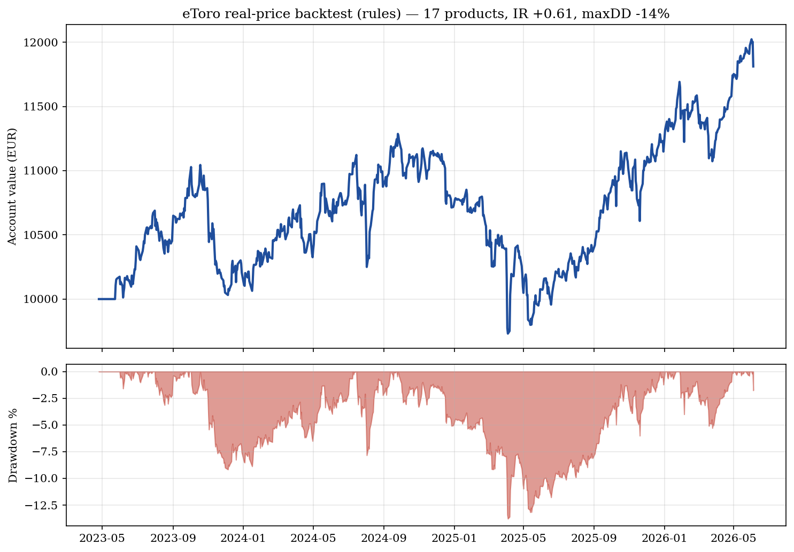
Εξέλιξη λογαριασμού (πραγματικές eToro τιμές). Πάνω: τα 10.000€ πώς μεγάλωσαν.
Κάτω (κόκκινο): πόσο κάτω από την κορυφή βρέθηκε κάθε στιγμή.
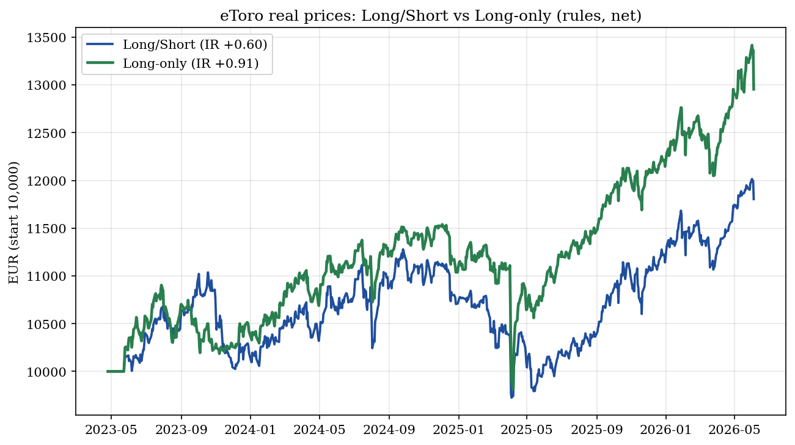
Long/Short vs Long-only (πραγματικές eToro τιμές). Το «μόνο ανοδικά» (πράσινο)
βγήκε καλύτερο σε αυτή την ανοδική περίοδο — οι short θέσεις ήταν βάρος.
Με 5 μέγιστα διαφοροποιημένα προϊόντα (SPY/TLT/GLD/USO/UUP)
Εκδοχή
IR
Χειρ. πτώση
10.000€ →
5 διαφοροποιημένα, long-only, 10% ρίσκο
+1.42
−9%
15.073€
5 διαφοροποιημένα, long-only, 20% ρίσκο
+1.52
−18%
22.958€
5 με crypto (BTC/SPY/TLT/GLD/UUP), 10% ρίσκο
+1.29
−7%
12.168€
5 > 17! Τα 5 ανεξάρτητα προϊόντα (ένα ανά κατηγορία) βγήκαν καλύτερα από τα 17
(IR 1.42 vs 1.03) — γιατί τα 17 είχαν διπλά/όμοια. Μετράει η διαφορετικότητα, όχι ο αριθμός.
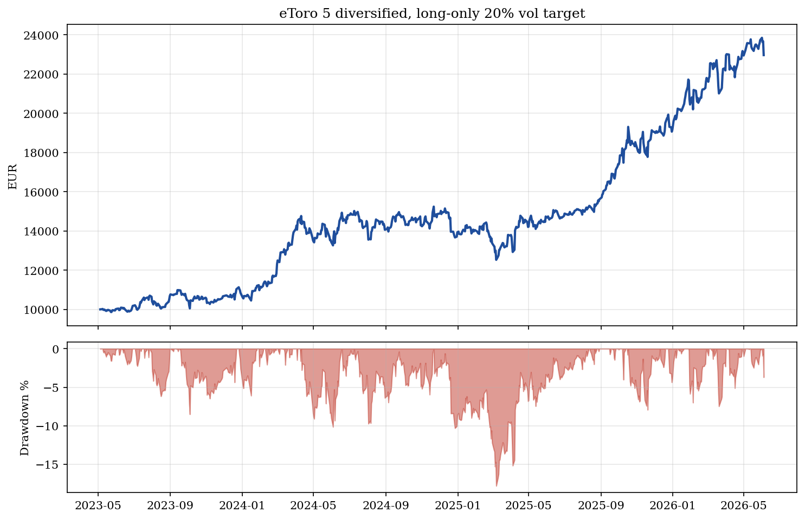
5 προϊόντα σε 20% ρίσκο. Διπλάσιο κέρδος (10.000€ → 22.958€) αλλά και διπλάσια
πτώση (−18%) σε σχέση με το 10%. Έτσι δουλεύει το «κουμπί ρίσκου».
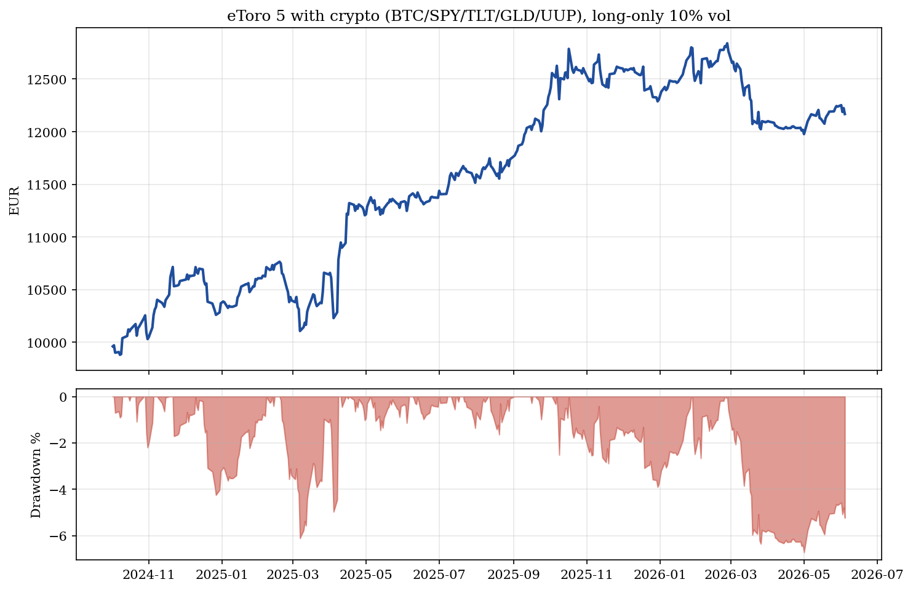
5 με crypto (BTC + διαφοροποιητές). Το BTC υπάρχει στο eToro· η υψηλή του
μεταβλητότητα μικραίνεται αυτόματα (μικρή θέση), οπότε προσθέτει διαφοροποίηση χωρίς να ανεβάζει το ρίσκο.
2. Πόσο κέρδος σε διαφορετικά επίπεδα ρίσκου (vol target)
Το «κουμπί ρίσκου» είναι η μεταβλητότητα-στόχος. Χαμηλό = ασφάλεια & μικρό κέρδος· υψηλό = μεγάλο
κέρδος ΑΛΛΑ μεγαλύτερες βουτιές. (Long-only, πραγματικές eToro τιμές, 3 χρόνια.)
Επίπεδο ρίσκου
Κέρδος (3 χρ.)
Ανά έτος
Χειρ. πτώση
10% (συντηρητικό — τώρα)
+30%
+9%
−15%
15%
+46%
+13%
−22%
20%
+63%
+18%
−28%
30% (επιθετικό)
+98%
+26%
−40%
Το κλειδί: το κέρδος είναι ανάλογο του ρίσκου. Διαλέγεις εσύ με
--vol (π.χ. --vol 0.20). Δεν υπάρχει «δωρεάν» μεγάλο κέρδος χωρίς μεγάλη πτώση.
3. Πώς νικάμε το «αγοράζω & κρατάω» (return stacking)
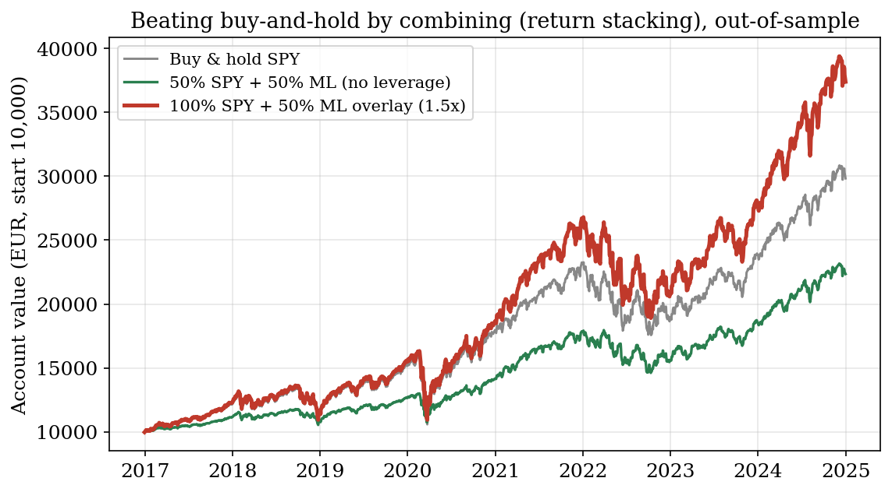
Κρατάς όλες τις μετοχές ΚΑΙ προσθέτεις τη στρατηγική από πάνω (με μόχλευση) →
ξεπερνάς το σκέτο «αγοράζω & κρατάω» (€37.390 vs €29.825, εκτός δείγματος).
4. Το ML μοντέλο (νευρωνικό LSTM)
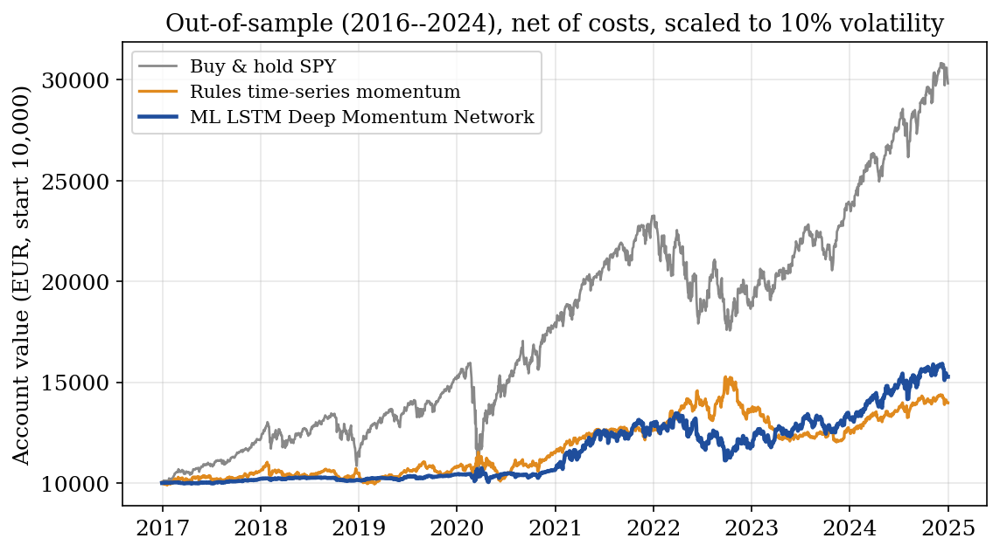
Το ML (μπλε) νικάει τον σταθερό κανόνα (πορτοκαλί) εκτός δείγματος. Το γκρι «αγοράζω &
κρατάω SPY» έβγαλε περισσότερα σε αυτή τη bull, αλλά με πολύ μεγαλύτερο ρίσκο/βουτιές.
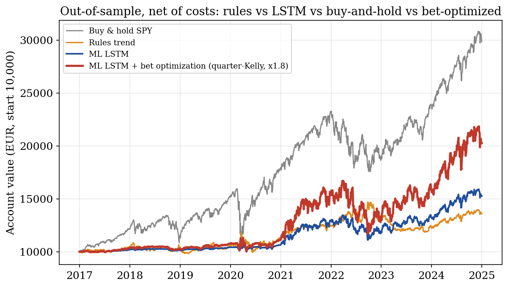
Position sizing: το «bet optimization» (κόκκινο, μόχλευση Kelly) ανεβάζει το κέρδος του ML.
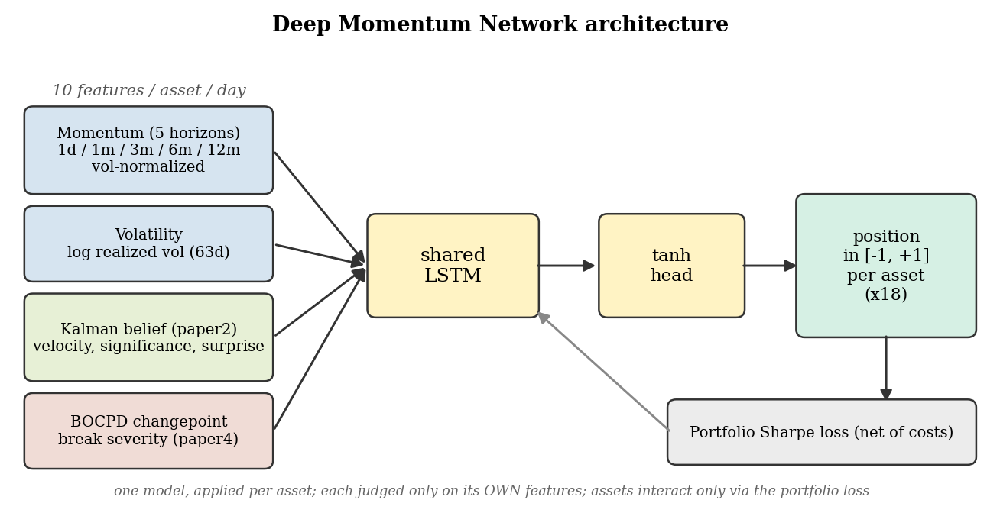
Πώς δουλεύει το μοντέλο: 10 πληροφορίες ανά asset → LSTM → θέση από −1 (full short) έως +1 (full long).
5. Γιατί δουλεύει — η διαφοροποίηση είναι το κλειδί
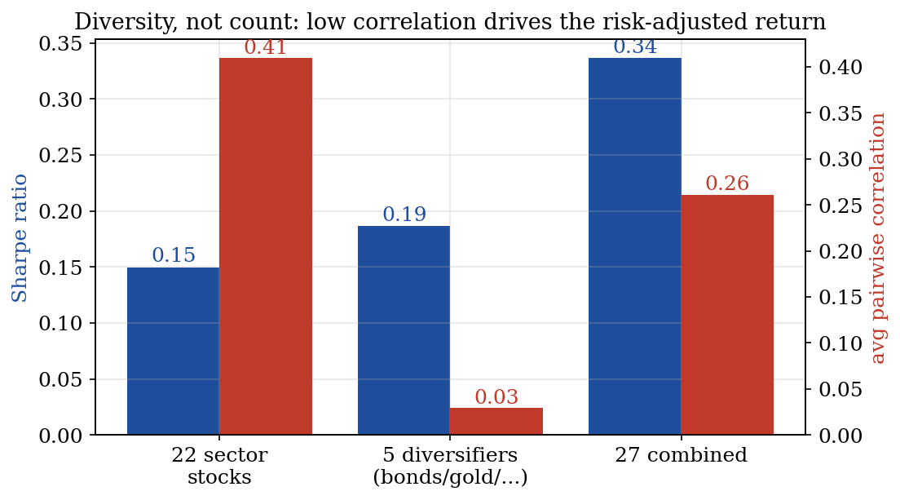
5 διαφορετικά πράγματα (χαμηλή συσχέτιση) νικάνε 100 όμοιες μετοχές. Ο συνδυασμός
έχει καλύτερο Sharpe από κάθε κομμάτι χωριστά — το «δωρεάν γεύμα» της διαφοροποίησης.
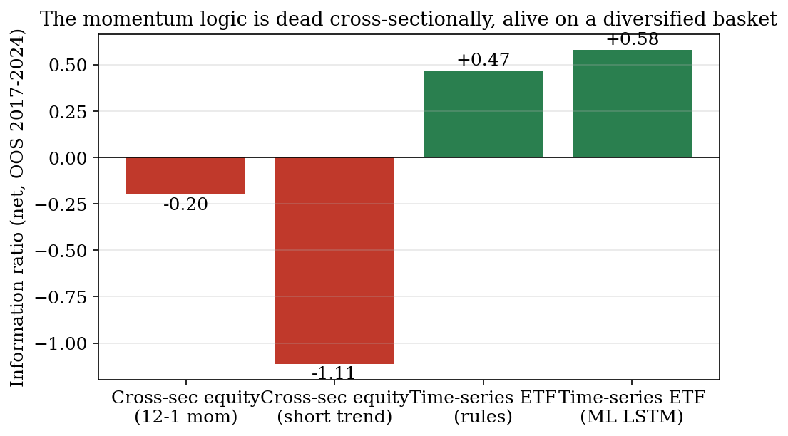
Η ίδια λογική είναι νεκρή στις μετοχές (cross-sectional) και ζωντανή στο
διαφοροποιημένο καλάθι. Γι' αυτό διαλέγουμε asset classes, όχι περισσότερες μετοχές.
6. Λεπτομέρειες (δεδομένα 17 ετών, Yahoo)
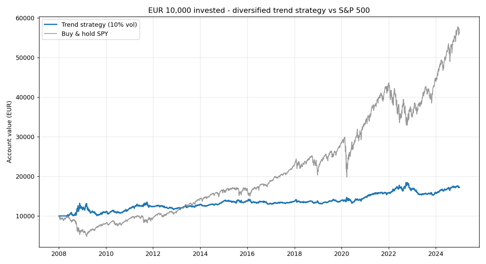
10.000€ vs αγοράζω & κρατάω SPY (17 χρόνια).
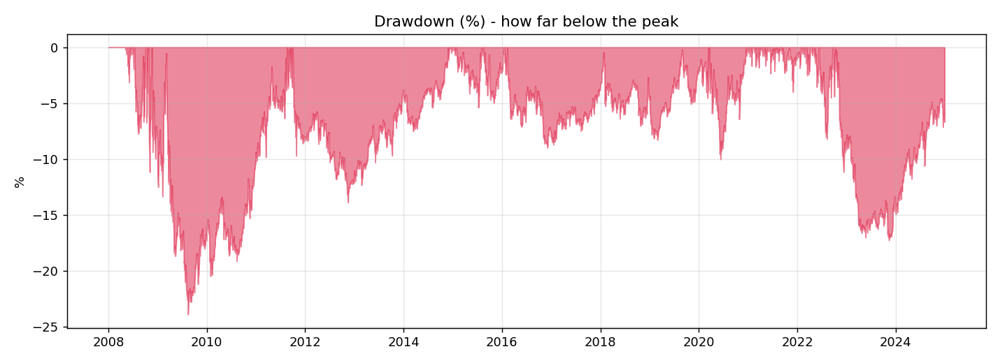
Πτώσεις από την κορυφή (underwater).
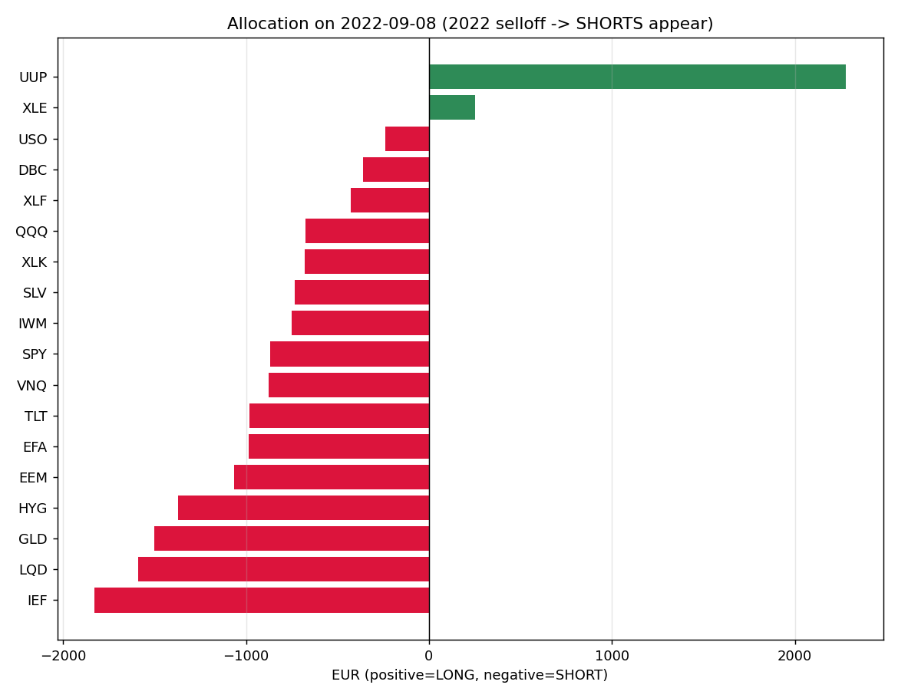
Κατανομή στο κραχ του 2022: σόρταρε σχεδόν τα πάντα, κράτησε long μόνο δολάριο & ενέργεια.